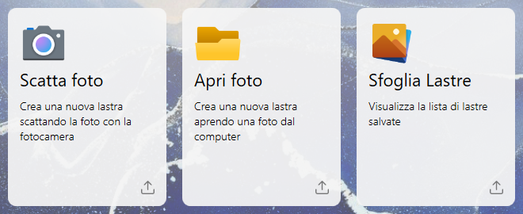
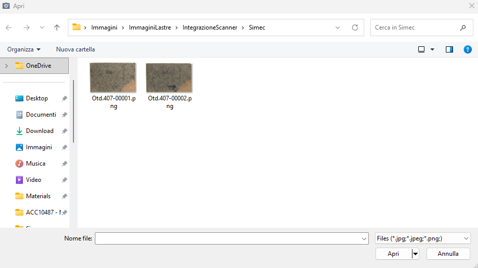

The system allows the user to configure, load and view slab information. Through the software it is possible:
Load new single slabs
Load multiple new slabs with the same configurations
Manage loaded slabs
Set additional features

Side bar
This bar appears in all main pages present in it: 'Home', 'Browse Slabs' and 'Settings'.
Menu | |
Home | |
Browse Slabs | |
Machine settings |
Home Screen
At startup of the application the following initial screen is displayed:

The cards listed below allow performing various actions by clicking on each of them.
Each card will be individually analyzed in the following chapters.

Take photo | |
Open Photo | |
Browse Slabs |
Open Photo
This function allows the user to import the image of a slab by selecting it directly from the device memory.

After selecting an image, the user has the option to set its parameters, as shown in the following example screenshot: